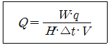

가스기능사 (2015-10-10 기출문제)
1과목: 가스안전관리
1. 다음 중 사용신고를 하여야 하는 특정고압가스에 해당하지 않는 것은?(관련 규정 개정전 문제로 여기서는 기존 정답인 4번을 누르면 정답 처리됩니다. 자세한 내용은 해설을 참고하세요.)
- 게르만
- 삼불화질소
- 사불화규소
- 오불화붕소
(정답률: 84%)

2. LP가스 저장탱크 지하에 설치하는 기준에 대한 설명으로 틀린 것은?
- 저장탱크실 상부 윗면으로부터 저장탱크 상부까지의 깊이는 1m 이상으로 한다.
- 저장탱크 주위 빈 공간에는 세립분을 함유하지 않은 것으로서 손으로 만졌을 때 물이 손에서 흘러내리지 않는 상태의 모래를 채운다.
- 저장탱크를 2개 이상 인접하여 설치하는 경우에는 상호 간에 1m 이상의 거리를 유지한다.
- 저장탱크실은 천장, 벽 및 바닥의 두께가 30cm 이상의 방수조치를 한 철근 콘크리트구조로 한다.
(정답률: 64%)
3. 용기의 설계단계 검사 항목이 아닌 것은?
- 단열성능
- 내압성능
- 작동성능
- 용접부의 기계적 성능
(정답률: 66%)
4. 고압가스용 저장탱크 및 압력용기 제조시설에 대하여 실시하는 내압검사에서 압력용기 등의 재질이 주철인 경우 내압시험압력의 기준은?
- 설계압력의 1.2배의 압력
- 설계압력의 1.5배의 압력
- 설계압력의 2배의 압력
- 설계압력의 3배의 압력
(정답률: 51%)
5. 초저온 용기의 단열성능 시험에 있어 침입열량 산식은 다음과 같이 구해진다. 여기서 “q”가 의미하는 것은?

- 침입열량
- 측정시간
- 기화된 가스량
- 시험용가스의 기화잠열
(정답률: 66%)
6. 인체용 에어졸 제품의 용기에 기재하여야 할 사항으로 틀린 것은?
- 불속에 버리지 말 것
- 가능한 한 인체에서 10cm 이상 떨어져서 사용할 것
- 온도가 40℃ 이상 되는 장소에 보관하지 말 것
- 특정부위에 계속하여 장시간 사용하지 말 것
(정답률: 88%)
7. 비등액체팽창증기폭발(BLEVE)이 일어날 가능성이 가장 낮은 곳은?
- LPG 저장탱크
- LNG 저장탱크
- 액화가스 탱크로리
- 천연가스 지구정압기
(정답률: 83%)
8. 자연발화의 열의 발생 속도에 대한 설명으로 틀린 것은?
- 발열량이 큰 쪽이 일어나기 쉽다.
- 표면적이 적을수록 일어나기 쉽다.
- 초기 온도가 높은 쪽이 일어나기 쉽다.
- 촉매 물질이 존재하면 반응 속도가 빨라진다.
(정답률: 85%)
9. 다음 가스의 용기보관실 중 그 가스가 누출된 때에 체류하지 않도록 통풍구를 갖추고, 통풍이 잘 되지 않는 곳에는 강제환기시설을 설치하여야 하는 곳은?
- 질소 저장소
- 탄산가스 저장소
- 헬륨 저장소
- 부탄 저장소
(정답률: 84%)
10. 발열량이 9500kcal/m3이고 가스비중이 0.65인(공기1) 가스의 웨버지수는 약 얼마인가?
- 6175
- 9500
- 11780
- 14615
(정답률: 65%)
11. 도시가스 배관의 매설심도를 확보할 수 없거나 타 시설물과 이격거리를 유지하지 못하는 경우 등에는 보호판을 설치한다. 압력이 중압 배관일 경우 보호판의 두께 기준은?
- 3㎜
- 4㎜
- 5㎜
- 6㎜
(정답률: 70%)
12. 고압가스안전관리법의 적용을 받는 고압가스의 종류 및 범위로서 틀린 것은?
- 상용의 온도에서 압력이 1MPa 이상이 되는 압축가스
- 섭씨 35도의 온도에서 압력이 0MPa를 초과하는 아세틸렌가스
- 상용의 온도에서 압력이 0.2MPa 이상이 되는 액화가스
- 섭씨 35도의 온도에서 압력이 0Pa을 초과하는 액화가스 중 액화시안화수소
(정답률: 63%)
13. 고압가스 제조허가의 종류가 아닌 것은?
- 고압가스 특수제조
- 고압가스 일반제조
- 고압가스 충전
- 냉동제조
(정답률: 52%)
14. 암모니아 충전용기로서 내용적이 1000L 이하인 것은 부식여유 두께의 수치가 ( A )mm이고, 염소 충전용기로서 내용적이 1000L초과하는 것은 부식여유 두께의 수치가 ( B )mm이다. A 와 B에 알맞은 부식 여유치는?
- A:1, B:3
- A:2, B:3
- A:1, B:5
- A:2, B:5
(정답률: 71%)
15. LPG 자동차에 고정된 용기충전시설에서 저장탱크의 물분무장치는 최대수량을 몇 분 이상 연속해서 방사할 수 있는 수원에 접속되어 있도록 하여야 하는가?
- 20분
- 30분
- 40분
- 60분
(정답률: 81%)
16. 산화에틸렌 충전용기에는 질소 또는 탄산가스를 충전하는데 그 내부가스 압력의 기준으로 옳은 것은?
- 상온에서 0.2MPa 이상
- 35℃에서 0.2MPa 이상
- 40℃에서 0.4MPa 이상
- 45℃에서 0.4MPa 이상
(정답률: 49%)
17. 다음 중 보일러 중독사고의 주원인이 되는 가스는?
- 이산화탄소
- 일산화탄소
- 질소
- 염소
(정답률: 85%)
18. 플레어스텍에 대한 설명으로 틀린 것은?
- 플레어스택에서 발생하는 복사열이 다른 제조 시설에 나쁜 영향을 미치지 아니하도록 안전한 높이 및 위치에 설치한다.
- 플레어스택에서 발생하는 최대열량에 장시간 견딜 수 있는 재료 및 구조로 되어 있는 것으로 한다.
- 파이롯트버너를 항상 점화하여 두는 등 플레어스텍에 관련된 폭발을 방지하기 위한 조치가 되어 있는 것으로 한다.
- 특수반응설비 또는 이와 유사한 고압가스설비에는 그 특수반응설비 또는 고압가스설비마다 설치한다.
(정답률: 58%)
19. 도시가스사용시설에서 도시가스 배관의 표시등에 대한 기준으로 틀린 것은?
- 지하에 매설하는 배관은 그 외부에 사용가스명, 최고사용압력, 가스의 흐름방향을 표시한다.
- 지상배관은 부식방지 도장 후 황색으로 도색한다.
- 지하매설배관은 최고사용압력이 저압인 배관은 황색으로 한다.
- 지하매설배관은 최고사용압력이 중압이상인 배관은 적색으로 한다.
(정답률: 67%)
20. 특정고압가스 사용시설에서 용기의 안전조치 방법으로 틀린 것은?
- 고압가스의 충전용기는 항상 40℃ 이하를 유지하도록 한다.
- 고압가스의 충전용기 밸브는 서서히 개폐한다.
- 고압가스의 충전용기 밸브 또는 배관을 가열할 때에는 열습포는 40℃이하의 더운 물을 사용한다.
- 고압가스의 충전용기를 사용한 후에는 밸브를 열어 둔다.
(정답률: 90%)
21. 일반도시가스의 배관을 철도부지 밑에 매설할 경우 배관의 외면과 지표면과의 거리는 몇 m이상으로 하여야 하는가?
- 1.0m
- 1.2m
- 1.3m
- 1.5m
(정답률: 66%)
22. 가스도매사업시설에서 배관 지하매설의 설치기준으로 옳은 것은?
- 산과 들 이외의 지역에서 배관의 매설 깊이는 1.5m 이상
- 산과 들에서의 배관의 매설깊이는 1m 이상
- 배관은 그 외면으로부터 수평거리로 건축물까지 1.2m 이상 거리 유지
- 배관은 그 외면으로부터 지하의 다른 시설물과 1.2m 이상 거리 유지
(정답률: 63%)
23. 인화온도가 약 -30℃이고 발화온도가 매우 낮아 전구표면이나 증기파이프 등의 열에 의해 발화할 수 있는 가스는?
- CS2
- C2H2
- C2H4
- C2H8
(정답률: 65%)
24. 액화가스를 충전하는 차량에 고정된 탱크는 그 내부에 액면요동을 방지하기 위하여 액면요동방지조치를 하여야 한다. 다음 중 액면요동방지조치로 올바른 것은?
- 방파판
- 액면계
- 온도계
- 스톱밸브
(정답률: 83%)
25. 가연성가스의 지상저장 탱크의 경우 외부에 바르는 도료의 색깔은 무엇인가?
- 청색
- 녹색
- 은·백색
- 검정색
(정답률: 80%)
26. 아르곤(Ar)가스 충전용기의 도색은 어떤 색상으로 하여야 하는가?
- 백색
- 녹색
- 갈색
- 회색
(정답률: 72%)
27. 지하에 매몰하는 도시가스 배관의 재료로 사용할 수 없는 것은?
- 가스용 폴리에틸렌관
- 압력 배관용 탄소강관
- 압출식 폴리에틸렌 피복강관
- 분말융착식 폴리에틸렌 피복강관
(정답률: 64%)
28. 아세틸렌 용기에 대한 다공물질 충전검사 적합판정기준은?
- 다공물질은 용기 벽을 따라서 용기안지름인 1/200 또는 1mm를 초과하는 틈이 없는 것으로 한다.
- 다공물질은 용기 벽을 따라서 용기안지름인 1/200 또는 3mm를 초과하는 틈이 없는 것으로 한다.
- 다공물질은 용기 벽을 따라서 용기안지름인 1/100 또는 5mm를 초과하는 틈이 없는 것으로 한다.
- 다공물질은 용기 벽을 따라서 용기안지름인 1/100 또는 10mm를 초과하는 틈이 없는 것으로 한다.
(정답률: 62%)
29. 액화석유가스가 공기 중에 얼마의 비율로 혼합되었을 때 그 사실을 알 수 있도록 냄새가 나는 물질을 섞어 용기에 충전하여야 하는가?
- 1/1,000
- 1/10,000
- 1/100,000
- 1/1,000,000
(정답률: 76%)
30. 가스누출자동차단장치의 구성요소에 해당하지 않는 것은?
- 지시부
- 검지부
- 차단부
- 제어부
(정답률: 67%)
2과목: 가스장치 및 기기
31. 도시가스사용시설의 정압기실에 설치된 가스누출경보기의 점검주기는?
- 1일 1회 이상
- 1주일 1회 이상
- 2주일 1회 이상
- 1개월 1회 이상
(정답률: 50%)
32. 고압가스 제조설비에서 정전기의 발생 또는 대전 방지에 대한 설명으로 옳은 것은?
- 가연성가스 제조설비의 탑류, 벤트스택 등은 단독으로 접지한다.
- 제조장치 등에 본딩용 접속선은 단면적이 5.5mm2 미만의 단선을 사용한다.
- 대전 방지를 위하여 기계 및 장치에 절연 재료를 사용한다.
- 접지 저항치 총합이 100Ω 이하의 경우에는 정전기 제거 조치가 필요하다.
(정답률: 56%)
33. 이동식부탄연소기의 용기 연결방법에 따른 분류가 아닌 것은?
- 용기이탈식
- 분리식
- 카세트식
- 직결식
(정답률: 60%)
34. 액화산소, LNG 등에 일반적으로 사용될 수 있는 재질이 아닌 것은?
- Al 및 Al합금
- Cu 및 Cu합금
- 고장력 주철강
- 18-8 스테인리스강
(정답률: 60%)
35. 저압식(Linde-Frankl 식) 공기액화 분리장치의 정류탑 하부의 압력은 어느 정도인가?
- 1기압
- 5기압
- 10기압
- 20기압
(정답률: 64%)
36. LP가스 저압배관 공사를 완료하여 기밀시험을 하기 위해 공기압을 1000mmH2O로 하였다. 이때 관지름 25mm, 길이 30m로 할 경우 배관의 전체 부피는 약 몇 L인가?
- 5.7L
- 12.7L
- 14.7L
- 23.7L
(정답률: 54%)
37. 저온, 고압의 액화석유가스 저장 탱크가 있다. 이 탱크를 퍼지하여 수리 점검 작업할 때에 대한 설명으로 옳지 않은 것은?
- 공기로 재치환하여 산소 농도가 최소 18%인지 확인한다.
- 질소가스로 충분히 퍼지하여 가연성가스의 농도가 폭발하한계의 1/4 이하가 될 때까지 치환을 계속한다.
- 단시간에 고온으로 가열하면 탱크가 손상될 우려가 있으므로 국부가열이 되지 않게 한다.
- 가스는 공기보다 가벼우므로 상부 맨홀을 열어 자연적으로 퍼지가 되도록 한다.
(정답률: 78%)
38. 연소에 필요한 공기를 전부 2차 공기로 취하며 불꽃의 길이가 길고, 온도가 가장 낮은 연소방식은?
- 분젠식
- 세미분젠식
- 적화식
- 전1차 공기식
(정답률: 65%)
39. 액주식 압력계에 대한 설명으로 틀린 것은?
- 경사관식은 정도가 좋다.
- 단관식은 차압계로도 사용된다.
- 링 밸런스식은 저압가스의 압력측정에 적당하다.
- U자관은 메니스커스의 영향을 받지 않는다.
(정답률: 73%)
40. 압측천연가스자동차 충전소에 설치하는 압축가스설비의 설계압력이 25MPa인 경우 이 설비에 설치하는 압력계의 지시눈금은?
- 최소 25.0MPa까지 지시할 수 있는 것
- 최소 27.5MPa까지 지시할 수 있는 것
- 최소 37.5MPa까지 지시할 수 있는 것
- 최소 50.0MPa까지 지시할 수 있는 것
(정답률: 66%)
41. 저온장치에서 열의 침입 원인으로 가장 거리가 먼 것은?
- 내면으로부터의 열전도
- 연결 배관 등에 의한 열전도
- 지지 요크 등에 의한 열전도
- 단열재를 넣은 공간에 남은 가스의 분자 열전도
(정답률: 69%)
42. 저장탱크 내부의 압력이 외부의 압력보다 낮아져 그 탱크가 파괴되는 것을 방지하기 위한 설비와 관계없는 것은?
- 압력계
- 진공안전밸브
- 압력경보설비
- 벤트스택
(정답률: 66%)
43. 공기액화분리장치에는 다음 중 어떤 가스 때문에 가연성 물질을 단열재로 사용할 수 없는가?
- 질소
- 수소
- 산소
- 아르곤
(정답률: 66%)
44. 도시가스 공급 시설이 아닌 것은?
- 압축기
- 홀더
- 정압기
- 용기
(정답률: 63%)
45. 암모니아 용기의 재료로 주로 사용되는 것은?
- 동
- 알루미늄합금
- 동합금
- 탄소강
(정답률: 55%)
3과목: 가스일반
46. 표준상태에서 부탄가스의 비중은 약 얼마인가? (단, 부탄의 분자량은 58 이다.)
- 1.6
- 1.8
- 2.0
- 2.2
(정답률: 66%)
47. 메탄(CH4)의 공기 중 폭발범위 값에 가장 가까운 것은?
- 5% ~ 15.4%
- 3.2% ~ 12.5%
- 2.4% ~ 9.5%
- 1.9% ~ 8.4%
(정답률: 64%)
48. 다음 중 가장 낮은 압력은?
- 1atm
- 1kg/cm2
- 10.33mH2O
- 1MPa
(정답률: 59%)
49. 부탄가스의 주된 용도가 아닌 것은?
- 산화에틸렌 제조
- 자동차 연료
- 라이터 연료
- 에어졸 제조
(정답률: 62%)
50. 포스겐의 화학식은?
- COCl2
- COCl3
- PH2
- PH3
(정답률: 78%)
51. 다음 중 헨리의 법칙에 잘 적용되지 않는 가스는?
- 암모니아
- 수소
- 산소
- 이산화탄소
(정답률: 65%)
52. 착화원이 있을 때 가연성액체나 고체의 표면에 연소하한계 농도의 가연성 혼합기가 형성되는 최저온도는?
- 인화온도
- 임계온도
- 발화온도
- 포화온도
(정답률: 64%)
53. 부양기구의 수소 대체용으로 사용되는 가스는?
- 아르곤
- 헬륨
- 질소
- 공기
(정답률: 82%)
54. 시안화수소를 충전한 용기는 충전 후 얼마를 정치해야 하는가?
- 4시간
- 8시간
- 16시간
- 24시간
(정답률: 82%)
55. 아세틸렌(C2H2)에 대한 설명 중 틀린 것은?
- 공기보다 무거워 낮은 곳에 체류한다.
- 카바이트(CaC2)에 물을 넣어 제조한다.
- 공기 중 폭발범위는 약 2.5 ~81% 이다.
- 흡열화합물이므로 압축하면 폭발을 일으킬 수 있다.
(정답률: 68%)
56. 황화수소에 대한 설명으로 틀린 것은?
- 무색이다.
- 유독하다.
- 냄새가 없다.
- 인화성이 아주 강하다.
(정답률: 73%)
57. 표준상태에서 산소의 밀도(g/L)는?
- 0.7
- 1.43
- 2.72
- 2.88
(정답률: 70%)
58. 다음 가스 중 비중이 가장 적은 것은?(오류 신고가 접수된 문제입니다. 반드시 정답과 해설을 확인하시기 바랍니다.)
- CO
- C3H8
- Cl2
- NH3
(정답률: 56%)
59. 이상기체의 정압비열(Cp)과 정적비열(Cv)에 대한 설명 중 틀린 것은? (단, k는 비열비이고, R 은 이상기체 상수이다.)
- 정적비열과 R의 합은 정압비열이다.
- 비열비(k)는 Cp/Cv로 표현된다.
- 정적비열은 R/(k - 1)로 표현된다.
- 정적비열은 (k - 1)/k 로 표현된다.
(정답률: 51%)
60. LNG의 주성분은?
- 메탄
- 에탄
- 프로판
- 부탄
(정답률: 82%)